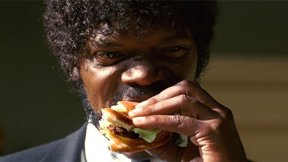

HOME
Big Kahuna Burger

That Hawaiian burger joint. Word on the street is they have some tasty burgers.
Ingredients
- 1 red onion, sliced into rings
- 2 Tbsp butter, divided
- 3 thin pineapple slices
- 1 Tbsp vegetable oil
- 4 ounces ground beef, divided into two balls
- 2 slices Monterey jack cheese
- King's Hawaiian roll, toasted in butter
- 1/2 Tbsp ketchup
- 1/2 Tbsp teriyaki sauce
Serve With
- Wash down with a verse of Ezekiel 25:17
- Side of vengeance
Preparation
- In a sauté pan, heat 1 tablespoon butter until foaming, and add red onion. Cook slowly over low heat, tossing constantly, until soft and caramelized - about 30 minutes. Set aside.
- Wipe out sauté pan, and heat remaining tablespoon of butter over medium heat until sizzling. Add pineapple slices, and sauté until lightly charred on both sides. Set aside.
- In a large cast iron skillet, heat vegetable oil over high heat, until smoking. Place beef balls several inches apart in skillet, and smash down using a large, flat spatula. Use a rolling pin or the handle of another spatula to press the burgers firmly down, until they are thin and craggly. Cook for approximately 60 seconds, until the bottom is charred and crispy. Flip, and immediately top with cheese. Remove from heat, but leave burgers in the pan while you assemble, so the cheese melts completely. Dress bun with ketchup and teriyaki sauce, top with burgers, then caramelized onions and pineapple.